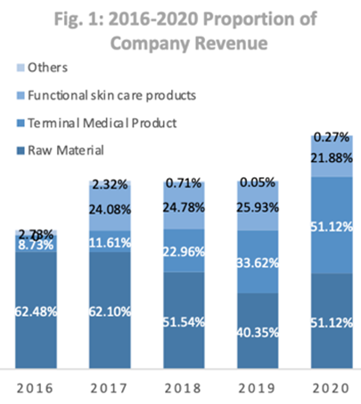
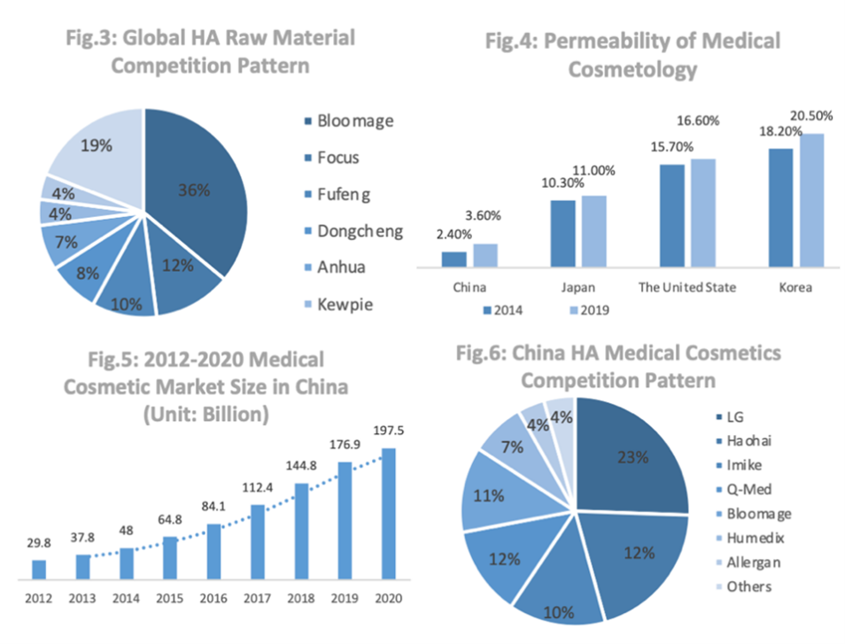
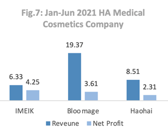
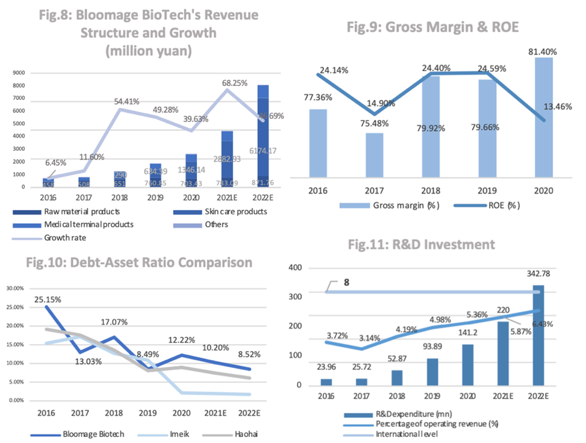
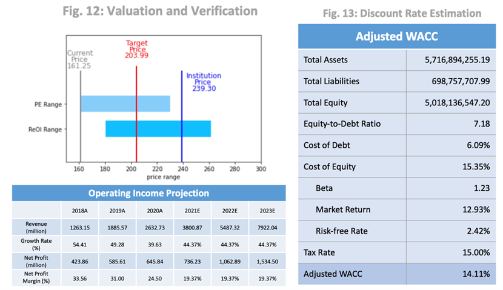
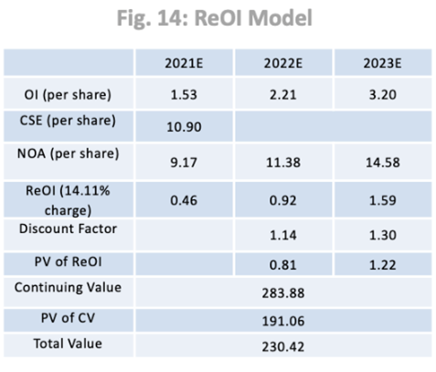
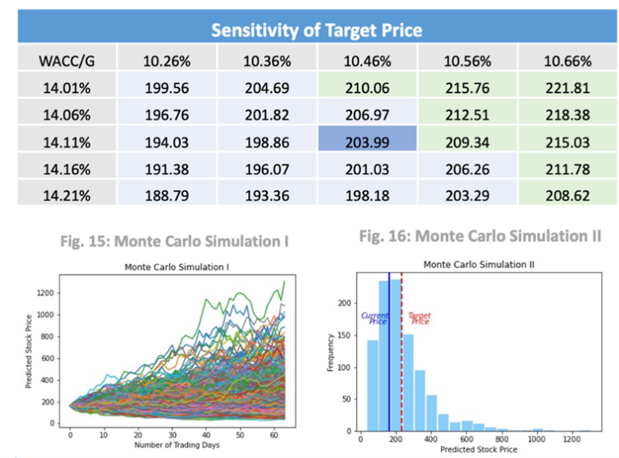

CFA Institute Research Challenge
Stock Price Prediction for BioTechnology Co., Ltd(688363.SH)
INVESTMENT SUMMARY
Since going public on the Science and Technology Innovation Board of the Shanghai Stock Exchange in 2019, recent years have witnessed a rapid progress of Bloomage BioTech’s business performances together with its stock price. As the world’s leading enterprise in the hyaluronic acid (HA) production currently, Bloomage BioTech tends to be lucrative and promising for investors.
We issue a buy recommendation on Bloomage BioTech with an expecting target price 203.99 CNY on 2022-2-28. To be specific, if an investor who takes our recommendation buys Bloomage BioTech at current price 161.25 CNY (2021-11- 30 close) and sells it about three months later, a 26.51% profit return is expected to achieve under the assumption that the market have exploited most of its intrinsic value. The investment logic is concluded based on the following key ideas:
1) Integrated industrial chain provides with robust fundamental.
2) Sustainable financial growth and low financial risk indicate a potential future development.
3) A valuation result at 203.99 CNY based on ReOI model indicates that Bloomage BioTech is currently underpriced.
4) The convincing validation towards the valuation has been conducted through sensitivity analysis and Monte Carlo simulation.
BUSINESS DESCRIPTION
Business Segments：The revenue structure of Bloomage BioTech
is composed of four segments: functional skin care products (51.12%),
HA raw materials (26.70%), medical terminal products (21.88%) and
other products (0.27%). Compared to last year’s revenue structure, the
revenue from functional skin care products increased by 112.19% and
achieved CNY1.346B. This explosive growth resulted from the company's
aggressive online marketing strategy. Due to COVID-19, revenue from raw materials
decreased by 7.55%. The revenue of medical 
terminal products increased by 17.79%, showing a potential growth
trend.
Industrial Chain Management：The industry chain of medical cosmetology mainly includes three links: the upstream is raw material and equipment suppliers, the midstream is service agencies, and the downstream is customer acquisition platforms. As the world's largest supplier of HA raw materials, Bloomage BioTech builds an industrial chain that contains research and development, production and sales of HA products.
INDUSTRY OVERVIEW
Raw material Market：Bloomage BioTech is the worldwide largest HA production enterprise, whose sales accounts for 36%. Other leading enterprises include Focus Chem, Fufeng BioTech and LookChem, whose market share are 12%, 10% and 8% (Fig.3), respectively.
Terminal Product Market of Medical Cosmetology：In China, the market size of medical cosmetology reaches CNY 197.5 billion with CAGR of 23.38% from 2012 to 2020. The permeability rate in China is only 3.6% in 2019, which is greatly less than other developed country, such as America and Korea, whose permeability rate are 16.6% and 20.5%, respectively (Fig. 4). Data from The New Oxygen Data Institute showed that in 2020, the number of medical and beauty consumers in China reached 15.2 million, with a year-on- year increase of 35.7%. By April 2021, the number of medical beauty users in China has reached 18.073 million, and medical beauty consumption continues to be hot. Therefore, we expect that the market size will increase to CNY 311.5 billion in 2023 (Fig. 5). Because the popularity and price of domestic HA are relatively low, Chinese HA medical cosmetology market is dominated by well-known foreign brand. In 2019, domestic HA product only accounted for 28% of the market share (Fig.6).
High Entering Technology Barriers：In raw material market, for pharmaceutical level HA raw material, there is a high requirement for the purity index of endotoxin, protein, nucleic acid and colony. For the terminal product, especially the injection medical cosmetology products, there are have high research and development costs and technical threshold. Take terminal production leading enterprises as an example, the research & development personnel of Bloomage BioTech, Haohai BioTech and IMEIK take up 16.8%, 19.7% and 22.9%, respectively. And they have also invested 0.14, 1.26 and 0.59 million, respectively, into research & development.
Strong supervision benefits the development of leading enterprises：Starting from 2002, China has begun to intensify supervision on medical cosmetology industry and successively published dozens of regulations to standardize for medical cosmetology equipment and drugs. For pharmaceutical raw material manufacturers, to obtain the production approval, they need to acquire different qualifications and the overall process will take 2 to 5 years. 
COMPETITOR POSITIONING
Based on the similar focus on HA production and the high net profits, IMEIK and Haohai Biological Technology are considered as the main competitors of Bloomage BioTech to conduct the following analyses. Compared with other competitors, Bloomage BioTech is very profitable with extremely high operating income and relatively steady rate of growth. Facing the impact COVID-19, Bloomage BioTech chooses to stimulate the development of C-end business, which helps it maintain a high gross profit in the fierce market competition. At the same time, IMEIK still focused on the development of B-end products while Haohai was seriously affected by the epidemic (Fig. 7). The high profitability and stability of it also benefit from its stronger research and development capabilities and expansion of the functional food sector.

FINANCIAL ANALYSIS
Sustainable revenue growth driven by reasonable layout of three business lines：Bloomage BioTech has an industry leading position in HA manufacturing, so until 2019, raw material manufacturing and sales are the main business, which accounts for 40.35% of total sales (Fig. 8) In 2020, functional skin care products surpassed raw material to be Bloomage BioTech’s main business segment at a revenue contribution rate of 51.12% (Fig. 8). This line generated 1.35 billion yuan of revenue with an extremely high CAGR 114%, indicating the functional skin care products line is enriching the single raw material sales line and becoming a new sales growth point. Although the proportion of raw material business line declines drastically and medical terminal products line maintains a low business percentage of 24%, they keep a stable growth of revenue with CAGR 11.3%, 31.8% respectively. At the same time, recent increased supervision of internet, education and medical beauty industries led by government policy may slow down Bloomage BioTech’s revenue growth level. However, according to the data above, Bloomage BioTech has turned to the C-end as a new growing point to better adapt to the industry standardization trend. Thus, we expect Bloomage BioTech’s revenue to grow 21% faster than the industry average growth rate in the following three years, which equals to 23.38%. To sum up, we see a great overall development power.
High gross margin attributed to advanced technology：The gross margin of Bloomage BioTech maintains at a fairly high level, with an average of 78.76% in the past five years (Fig. 9) It is attributed to its advanced technology and professional production line in HA manufacture with a low COGS. However, its profit is relatively low, but is still competitive to Haohai BioTech and Imeik. We explore the principal factor. Biopharmaceutical industry is technology intensive. Its product development cycle is long and R&D investment will be no immediate result. Thus, in some years, like 2017 and 2020, the investment expenses didn’t pay back yet, so the ROE is lower. It is also worth noting that Bloomage BioTech’s total R&D investment in 2020 is NCY 141.16 million according to its annual report. The company counted all of it as expensed R&D and the capitalized R&D is counted 0, which significantly declined profit for the year.
Continuous improvement of debt solvency：The current ratio of Bloomage BioTech raised from 2.56 in 2016 to 6.63 in 2020, and the quick ratio from 2.14 to 4.59. According to the data, Bloomage BioTech’s short-term solvency improved in the past 5 years. The company has a low risk of short-term debt repayment crisis. As for long-term solvency, we see the Debt-Asset ratio of Bloomage BioTech in 2019 decreased significantly because of the substantial increase in assets duo to the listing (Fig. 10) However, the ratio picked up in 2020, larger than that of Haohai BioTech and Imeik. It may be caused by the industry regulatory policy and increased R&D investment in order to conform to the market such as HA food, but compared with the industry average level of Debt-Asset ratio around 60%, Bloomage BioTech is still at a fairly low level.
Insufficient R&D investment may block future transactions in international competition：Bloomage BioTech has been committed to create a BioTechnology company driven by R&D since its foundation. It constantly increased R&D investment in the past three years (Fig. 11). By 2020, it has employed 377 researchers in total and patented 289 inventions. In the domestic market, Bloomage BioTech has been in an industry leading position. However, for foreign biopharmaceutical enterprises of the same scale, the percentage of R&D investment to operating revenue is about 8%, which is much higher than Bloomage BioTech’s proportion.

VALUATION
According to the result of our valuation model, the BUY recommendation is put forward on Bloomage BioTech with a target price of 203.99 CNY on Feb. 28th, 2021. Compared with the closing price on Nov. 30th, 2021, which is 161.25 CNY, Bloomage BioTech has a 26.51% upside of price in the following 3 months. Due to our relatively conservative assumptions, the valuated price is lower than the one which is more generally accepted by the institutions. We still propose a BUY recommendation based on its huge growth space. We use ReOI model (Bloomage BioTech is expected to generate stable residual earnings in the future) to value Bloomage BioTech with auxiliary P/E method and quantitative analysis verifying our valuation (Fig. 12).
I. Key Assumptions: the adjusted discount rate.
The discount rate is calculated by WACC model formulated as below:
Discount Rate = WACC = D/V * Rd * (1 - T) + E/V * Re
The Equity-to-Debt ratio is calculated based on the Balance Sheet on Dec 31st, 2020. The cost of debt is estimated based on the yield to maturity on Nov. 30th, 2021, of a listed long-term bond of a comparable corporation, Lancy (Lancy and Bloomage BioTech are in the same industry with similar business model). The cost of equity is estimated by CAPM which takes the risk premium into account and is in accordance with the investors’ consideration of risk compensation: (a) The market return is calculated by the CAGR of CSI 300 in the past two years which can reflect market return. (b) Beta is calculated based on the returns of CSI 300 and Bloomage BioTech in the past two years. (c) The risk-free rate is represented by the weighted average 1-year treasury bond interest rate in 2021. The tax rate is calculated using the average tax rate in the past 5 report periods. Eventually, we can get a discount rate 14.11% (Fig. 14).
II. Estimating the Operating Income in the next 5 years
(a) Default assumptions by institutions.
The industry net profit margin can be regarded as the benchmark of the corporation’s net profit margin indicator. The Bio-pharmaceutical industry has a net profit margin of 9.04% in 2019 (Since the production of Bio- pharmaceutical industry in 2020 was seriously affected by the epidemic, where the financial data suffered from a large deviation). Besides, the corporation’s annual net profit growth rate is publicly accepted to approach Bio-pharmaceutical industry’s compound annual net profit growth rate.
(b) Adjustments for existing assumptions.
Because Bloomage BioTech is one of the leading enterprises of Bio- pharmaceutical industry, it far outperforms the industry average. In addition, based on our profound insights from the industry, competitors, and the corporation itself, we make some adjustment to the previous corporation’s growth assumptions.
The future operating income is mainly based on Bloomage BioTech’s future business plan and current market pattern. The compound annual growth rate of revenue from 2018 to 2020 is 44.37%. Because of Bloomage comparative advantaged among its main competitors, including high market share of the global HA market and abundant investment in R&D, we assume Bloomage BioTech will maintain a stable revenue growth rate at 44.37% in the following 3 years. The revenue for the first half year of 2021 is 1,936,614,650.94 which is relatively close to the estimation and can be considered as a verification of the assumption. The average net profit margin in the past three years is 23.70%. Combined with the industry average, we have made a compromise. Based on the advantages (e.g., high entry barriers and High R&D capability and the disadvantages (e.g., High market saturation), we assume the net profit margin will maintain at 19.37% in the following 5 years.
The compound annual net profit growth rate of the Bio-pharmaceutical
industry in the past 10 years is 10.46%. The long-term development
trend of Bloomage BioTech
should have been bound to converge with the development trend of the
bio-pharmaceutical industry in the long run. But Bloomage BioTech
is also an untypical medical beauty company High-tech content. The
entry barrier of medical beauty industry is relatively low. Thus, the
current situation of medical beauty industry is that head effect is
not greatly significant with high diversification of numerous
small-scale medical beauty companies. Medical beauty industry also has
a high market saturation rate, so the traditional 2C business has
little room for growth. Benefitting from the national policy of
medical beauty industry rectification and reform released several
months ago, the phenomenon of non-standardized industry will be
mitigated, and the development of leading enterprises will be
supported. Bloomage BioTech
is expected to gradually increase its market share in the medical
beauty industry. In addition, according to the Bloomage BioTech’s
current business pattern, the 2B business has begun to take shape and
had a good development trend. It has huge growth potential in the
future to break the development bottleneck of the traditional medical beauty industry. Therefore, we
still assume Bloomage BioTech’s net profit will maintain a stable growth rate at 10.46% after 3
years. 
III. ReOI Results.
Based on the formulas:
NOAt = NOAt-1 * (1 + RNOA) = NOAt-1 * (1 + OIt/ NOAt-1)
ReOIt = OIt-1 – (ρ – 1) * NOAt-1

Using the updated assumptions above, we apply the ReOI
model to calculate the target price, which is equal to 230.42 CNY
(Fig. 14). This target price suggests that by the end of February of
2022, Bloomage BioTech
will earn a 26.51% return if it is relatively fairly priced. This target price is lower than the generally accepted price 239.30
CNY by institutions, however, still indicating a high profit margin
with 3 months. Therefore, we put forward a BUY recommendation.
VERIFICATION OF THE TARGET PRICE
I. Robustness of ReOI Model.
The ReOI model heavily relies on the estimated discount rate and net profit growth rate. Therefore, we think that it is necessary to carry out a sensitivity analysis on these two variables. Based on our relatively solid assumptions, the adjustment range of these two variables is slight in the sensitivity analysis. In the most conservative scenario, we still expect a 17.08% upside of price in the following 3 months while 37.56% for the most optimistic scenario.
II. Monte Carlo Simulation.

Based on historical price of Bloomage BioTech
in the past two years, we apply Monte Carlo simulation to simulate
stock price movement in the end of 2021. Therefore, we can get some
insights of the intrinsic value of Bloomage BioTech
in the perspective of statistics. From the simulation, the average
price of Bloomage BioTech
is 236.80 after 3 months. Besides, we find that there is a probability
of 64.3% to obtain a price above the current price and a probability
of 49.78% to obtain a price above the target price, which effectively
justifies our estimation. Therefore, the robustness of ReOI
model has been verified (Fig. 15 & 16).
INVESTMENT RISK
Market risk
Potential Decrease in Demand: Although it is now in the post-epidemic period, as close to 65% of the company’s HA products are sold abroad, blockades and measures to respond to the epidemic in some regions will still cause product sales to fall (0~20%). However, Bloomage BioTech’s entire industrial chain will play a strong positive role in avoiding some market fluctuation risks. Even if Bloomage BioTech meets some reduced demand during the economic recession, we expect that Bloomage Biotech will be able to ride out COVID-19 pandemic with more than CNY 3,800.87 million in revenue on its balance sheet.
Financial risk
Exchange Rate Risk: 43% of Bloomage BioTech’s revenue in fiscal 2020 was from countries outside China, but no country outside of China generated more than 8% of Microsoft’s revenue. Bloomage BioTech is exposed to volatility in exchange rate, but diversification, option and forward contracts can hedge a portion of forecasted international revenue. Bloomage BioTech estimates that currency variation will reduce 2% of revenue and increase 1% of selling cost and operational expenses.
Interest Rate Risk: Bloomage BioTech’s long-term debt increased from CNY 423.5 million in 2016 to CNY 698.8 million in fiscal 2020. In the short term, People's Bank of China has cut long-term interest rates to prop up the China economy, so Bloomage BioTech faces a lower cost of debt. But interest fluctuation may impact Bloomage BioTech’s consolidated financial statements in the long term.
Operational risk
New Product Line Risk: Bloomage BioTech may make investments in new product line that may not achieve expected returns. Starting from January 21, 2021, the company has developed HA-related products, including oral liquids, soft sweets, and compressed candies. In 2016, Bloomage BioTech and Shandong College of Pharmacy released the paper "Study on the Improvement Effect of Oral Hyaluronic Acid on Skin Moisture and Antioxidant Effect in the Body". The paper shows that in a controlled experiment, the experimenter took 120 mg of hyaluronic acid every day for 45 days, and his skin moisture increased from 8.7% to about 9.6%. Nevertheless, the conclusions of related experiments are still controversial.
Corporate Governance Risk: On December 25, 2020, the company's director, deputy general manager and secretary of the board of directors Rui Jiang stepped down from Bloomage BioTech’s Board of Directors. With Rui’s departure, the power struggle in the Board may occur and raise agency costs.
Renewal of Business Qualification: In 2021, Bloomage BioTech will have 14 certification certificates and other business qualifications to expire one after another, and the company has now carried out corresponding renewal work. According to some domestic laws and regulations in China, pharmaceutical device manufacturers need to obtain a series of business qualifications for production, registration, sales, and export, before the relevant qualifications expire. Bloomage BioTech needs to apply for certificate renewal in time.
Political Risk
Governmental Restriction: Government litigation and regulatory activities relating to
competition rules may limit how Bloomage BioTech
designs and market its products.
International Restriction: Potential liability under trade protection, anti-corruption, and
other laws about Bloomage BioTech
global operations may bring legal claims, fines, or reputational
damage.
Industry Risk
Governmental Restriction & Intense Competition: Bloomage BioTech must be in pace with the changing environment and invest in infrastructure and devices, which may increase operating costs and decrease operating margins (Fig. 17).
ESG ANALYSIS
Low carbon operation, energy saving and environmental protection：The company fully implemented "Made in China 2025" and "Green Manufacturing Engineering Implementation Guidelines", introduced the design and management concepts of green factories, and established a green factory management organization. The green factory management organization has carried out in-depth research and analysis in many aspects such as product development direction, production technology and process equipment, starting from the aspects of production automation, plant intensification, harmless raw materials, waste recycling, and low-carbon energy. The establishment of a green factory standard system has effectively reduced the impact of the product's entire life cycle on the environment. In order to effectively control the various pollutants produced by the company in the production and operation process and reduce the impact on the environment, the company has invested a total of 8.6 million yuan in environmental protection in 2020.
Protection of intangible cultural heritage：Bloomage BioTech regards inheriting Chinese culture and protecting "intangible cultural heritage" as one of the indispensable social responsibilities of the enterprise. Bloomage BioTech has been excavating and protecting my country’s immaterial intangibles that are on the verge of disappearing for 10 consecutive years. Cultural heritage is protected and passed on through the "Yunzhong Series" activities every year.
Measures for COVID-19：After the outbreak of COVID-19, Bloomage BioTech established an epidemic response leadership group, and fully mobilized various resources to immediately organize the production of "Runbaiyan Medical Disinfectant Gel" to aid the epidemic area. Bloomage BioTech has delivered twelve batches of anti-epidemic and living supplies such as Runbaiyan medical disposable disinfectant gel to more than 50 anti-epidemic first-line hospitals in more than 20 urban areas. And the medical team assisting Hubei made targeted donations, and the accumulated donated materials exceeded 10 million yuan.
Corporate
Progressive Framework | The purpose of corporate governance framework is to let Board of Directors have enough authority and make sure practices are in place, enabling them to evaluate business operations and to make decisions independently. The directors make every effort to balance the interests of directors, management, and shareholders. Bloomage BioTech’s framework also establishes the practices include many parts such as “board meetings and involvement of senior management”, “CEO performance evaluation”, and “senior executive development and succession planning”. The institutional shareholders can urge the management to make decisions that benefit shareholders, which can protect the rights of shareholders, especially the minority stockholders (Fig. 18).
Chairman of the Board | The chairman of the Board is also CEO in Bloomage BioTech. The duties of the chairman include organizing the meeting of separate investors and the Board, integrating the agenda, engaging with shareholders. The chairman and CEO is closely monitored by the audit committee to prevent the shareholders' related rights and interests from suffering losses due to improper operations.
Board | The board of directors (15 in all) consist of 3 directors with advanced stock raising qualification and rick experience in hog production industry and 6 experts with excellency in financing, accounting and management field. The directors are evenly distributed across each committee. For regular Board meeting, the directors independently meet in executive sessions.